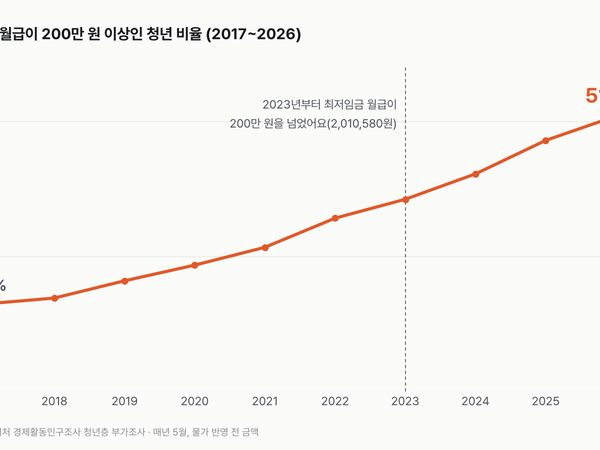

카테고리
일·이직

개발자는 그대로인데, 신입 자리만 줄었어요
일하는 사람은 그대로인데 새로 들어가는 사람만 줄었어요. 지금 1년 차가 적으면 3년 뒤 3년 차도 적을지, 그게 궁금해졌어요.

청년 취업자가 줄었다는데, 20대 후반은 1년 전만큼 일해요
줄어든 청년 취업자 넷 중 셋은 사람 수가 줄어든 데서 나왔어요. 일하는 비율이 내려간 곳은 막 일을 시작하는 20대 초반이었어요.

이직하면 월급이 오를까요? 8년 중 가장 덜 올랐어요
직장을 옮긴다고 월급이 꼭 오르는 건 아니에요. 다섯 명 중 두 명은 내렸어요. 옮기기 전 월급이 적었던 사람일수록 오른 사람이 많았어요.

들어간 지 1년 안 된 회사, 1년 뒤엔 절반도 안 남아요
회사를 옮기는 비율은 들어간 지 얼마 안 됐을 때 가장 높아요. 8년 내내 같은 모양이었어요.

첫 월급 200만 원, 이제 청년 둘 중 하나는 넘어요
첫 월급 200만 원은 이제 청년 첫 월급의 한가운데에 가까운 금액이에요. 최저임금만 받아도 넘는 선이 됐어요.

대기업과 중소기업 월급, 배수는 줄었는데 금액 차이는 커졌어요
같은 숫자로 '격차가 줄었다'와 '격차가 벌어졌다'를 둘 다 말할 수 있어요. 몇 배로 재느냐, 몇 원으로 재느냐의 차이예요.

비정규직 월급은 정규직의 절반일까요? 시간제를 빼면 4분의 3이에요
절반이라는 숫자엔 하루 몇 시간만 일하는 사람들이 같이 들어 있어요. 시간제를 빼면 차이는 정규직 월급의 4분의 1이 조금 안 돼요.

일하는 65세 이상이 일하는 20대보다 많아졌어요
20대는 일하는 비율은 그대로인데 사람 수가 줄었고, 65세 이상은 사람 수도 늘고 일하는 비율도 29.4%에서 39.5%로 올랐어요. 일터에서 마주치는 얼굴의 나이가 그만큼 바뀌고 있어요.

주 54시간 넘게 일하던 사람, 이제 열에 하나도 안 돼요
아주 길게 일하는 사람과 아주 짧게 일하는 사람이 이제 비슷한 크기예요. 평균 38.2시간 안엔 이 두 무리가 같이 들어 있어요.

한국 최저임금, 24년 새 OECD에서 가장 많이 올랐어요
중간 월급에 견주면 한국 최저임금은 OECD 맨 아래쪽에서 위쪽 3분의 1 안으로 올라왔어요.
자료실에 있는 일·이직 글 36편
- 직장 인생 상식 여섯 개, 데이터로 채점하면?맞다 1 · 반반 2 · 틀리다 3
- 실업률엔 안 잡히는 청년, 실업자의 두 배가 더 있어요경제활동인구조사 2015~2026
- 일하는 19~54세 여성, 둘 중 하나는 이미 일에 AI를 써요여성의 경제활동 및 경력단절 실태조사 2025
- 개발 업계 20대 일자리, 3년 새 넷 중 하나가 없어졌어요임금근로일자리동향 2018~2026
- 그냥 쉬는 청년, 셋 중 하나는 '원하는 일자리 찾기 어려워서'라고 해요비경제활동인구 부가조사 2016~2026
- 일하는 한국 여성, 이제 OECD 평균 바로 아래까지 왔어요OECD 고용률 2000~2025
- 임금을 적게 받는 사람은 줄었는데, OECD 평균보다는 많아요OECD 저임금 발생 비율
- 남녀 임금 격차, 줄긴 했는데 OECD에선 여전히 가장 커요OECD 성별 임금 격차 2000~2024
- 물가를 맞추면 한국 평균 연봉은 OECD 몇 번째일까요?OECD 평균 임금 1990~2025
- 한국은 아직 오래 일하지만, OECD와의 차이는 많이 줄었어요OECD 실근로시간 2008~2025
- 스스로 회사를 그만두는 사람, 늘었을까요?사업체노동력조사 2018~2026
- 근로장려금 받는 집, 30세 미만이 가장 많아요국세통계 2014~2024
- 실업급여, 정말 해마다 최대일까요?고용행정통계 2015~2026
- 작은 회사에 다닐수록 퇴직연금이 없어요퇴직연금통계 2015~2024
- 다시 일하려는 사람, 열에 셋은 월 300만 원 이상을 바라요비경제활동인구 부가조사 2018~2026
- 휴학은 늘었는데, 4년제 졸업까지 걸리는 시간은 그대로예요청년층 부가조사 2007~2026
- 유연근무 하는 사람은 늘고, 재택은 코로나 때보다 줄었어요근로형태별 부가조사 2015~2026
- 새 일자리를 얻은 사람, 2017년 이후 가장 적었어요일자리이동통계 2017~2024
- 줄어든 청년 취업자, 넷 중 셋은 인구가 줄어서였어요15~29세 vs 15~34세
- 비정규직 고용보험은 정규직 쪽으로 다가갔는데, 국민연금은 멀어졌어요근로형태별 부가조사 사회보험·근로복지
- 가장 오래 다닌 직장, 몇 살에 그만뒀을까요고령층 부가조사
- 나이 들어도 일하고 싶다는 사람, 몇 살까지일까요?고령층 부가조사
- 청년 첫 직장, 아는 사람 소개보다 시험으로 들어가요청년층 부가조사 취업경로
- 시험 준비하는 청년, 이제 공무원보다 기업 쪽이 많아요청년층 부가조사 2006~2026
- 배우는 어른은 늘었는데, 일 때문에 배우는 사람은 줄었어요평생학습개인실태조사
- 연차를 5일도 못 쓰던 사람, 이제 드물어요근로자 휴가조사
- 직장 잃을까 불안한 사람, 15년 내내 절반이 넘어요사회조사 고용의 안정성 2011~2025
- '일이 먼저'라는 사람, 20대에서 가장 많이 줄었어요사회조사 일과 가정생활 우선도
- 일자리 만족은 15년 새 늘었고, 불만이 가장 많은 건 월급이에요사회조사 근로여건 만족도
- 공대 나오면 취업 잘 된다, 지금도 그럴까요졸업자 취업통계 2011~2024
- 20대 비정규직 비율은 올랐는데, 비정규직 수는 그대로예요근로형태별 부가조사 2003~2026
- 20대는 줄었는데, '그냥 쉬었다'는 20대는 늘었어요경제활동인구조사 2003~2025
- 직업 고를 때 가장 먼저 보는 것, 15년 동안 바뀌었을까요사회조사 2011~2025
- 20년 다닌 일자리 월소득, 1년 안 된 자리의 네 배예요임금근로일자리 소득 2016~2024
- 첫 직장을 그만둔 이유, '계약이 끝나서'가 두 번째가 됐어요청년층 부가조사 2004~2026
- 일하는 시간은 줄었는데, 출퇴근 시간은 그대로예요생활시간조사 1999~2024
일·이직 새 글 받아 보기
피드 리더 앱에 이 사이트 주소를 한 번 넣어 두면, 새 글이 올라올 때 앱에 떠요. 가입이나 메일 주소는 필요 없어요.
받는 법 보기
- 피드 리더 앱을 하나 골라요. 새 글을 모아 보여 주는 앱이에요. 예를 들면 Feedly나 Inoreader가 있어요. 둘 다 무료고 웹·휴대폰에서 써요.
- 앱에서 '구독 추가'(+)를 누르고 아래 주소를 붙여 넣어요.
- 끝이에요. 새 글이 올라오면 앱 목록에 떠요.
https://protofu.github.io/opendata-insight/category/work/feed.xmlFeedly를 쓴다면 여기를 눌러 바로 추가할 수도 있어요.
일·이직 말고 모든 새 글을 받고 싶다면 전체 주소를 넣으면 돼요.